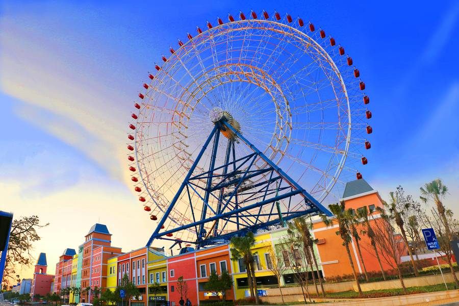

一、景點簡介
麗寶樂園渡假區位於台中市后里區，佔地廣達約 200 公頃。這裡將夢幻的遊樂園、充滿異國風情的購物商場、國際級賽車場以及全台最大摩天輪完美融合，是台灣規模最大的一站式綜合主題渡假區。每當夜幕低垂，巨大的摩天輪在夜空中綻放斑斕燈火，與遊樂園的歡笑聲交織，宛如一座永不散場的盛夏童話城堡，被譽為中部最繽紛的夢幻地標。
二、歷史發展
追溯麗寶樂園的歷史，其前身為 2000 年開園的「月眉育樂世界」，是當時台灣備受矚目的指標性台糖土地開發案，並率先啟用台第一個水上樂園「馬拉灣」。隨後，麗寶集團於 2006 年正式接手經營，投入大量資金進行全面轉型與擴建。不僅將陸上樂園更名為「探索世界」，更陸續打造了全台最大的義大利風格 Outlet Mall、全台唯一的國際認證賽車場，以及跨年地標「天空之夢」摩天輪，成功將單一的遊樂園轉型為國際級的多元渡假版圖。
三、園區特色
麗寶樂園渡假區最大的亮點在於其「水陸雙樂園、賽車、購物、地標」四位一體的極致娛樂體驗。 • 探索世界與馬拉灣： 擁有全台唯一斷軌雲霄飛車「搶救地心」的驚心動魄，以及夏季限定、擁有全南南洋浪潮的巨大造浪池「大海嘯」，滿足水陸雙重刺激。 • 天空之夢摩天輪： 全台最大、海拔總高度達 384 公尺的空中地標，在空中能遠眺火炎山與台灣海峽，是極具指標性的浪漫約會聖地。 • 國際級賽車與歐風購物： 擁有國際汽車聯盟（FIA）認證的專業賽道，能親身體驗卡丁車奔馳的心跳；而 Outlet Mall 則引進北義大利運河風格與全台唯一的鐘樓星巴克，帶來濃郁的異國度假氛圍。

四、推薦遊玩路線
為了能在一天之內玩轉麗寶的熱血與浪漫，建議規劃以下雙主題遊玩路線：
- 上午極速與童話冒險： 開園先前往「探索世界」挑戰明星設施
- 午後漫步北義小鎮： 接著步入「麗寶 Outlet Mall 二期」，沿著北義運河畔散步，在鐘樓前享受優雅的午茶時光。
- 黃昏與夜晚的浪漫終章： 傍晚搭乘「天空之夢摩天輪」俯瞰火炎山夕陽；日落後重返樂園或 Outlet，在燈火斑斕與星光點點中為旅程畫下句點。
五、周邊景點比較
若安排台中后里與海線一日遊，可以將周圍風格迥異的景點一併納入考量：
| 景點名稱 | 主要特色 | 適合活動 |
|---|---|---|
| 后豐鐵馬道 | 百年花梁鋼橋、舊山線九號隧道、鐵道風情 | 單車健身、歷史古蹟巡禮、大自然森林浴 |
| 梧棲漁港 | 新鮮海產魚市、觀光漁船 | 品嚐海鮮美食、採買新鮮漁獲 |
| 外埔忘憂谷 | 隨季節變換的無邊際稻浪、拼布大地、外星人稻田 | 鄉村散步、放鬆身心、網美文青風攝影留念 |
六、麗寶樂園影音導覽
以下是麗寶樂園的影音導覽，讓您更深入了解園區設施及遊玩路線。
若平台限制嵌入無法觀看，請點擊一般影片連結："麗寶樂園園區介紹YouTube 影片"
影片為官方於五年前發布的介紹，現場狀況請以最新官方資訊為準。
七、參考資料
以下為本篇報導整理的參考資料，提供讀者進一步查閱與了解：
- 報導參考文字：麗寶樂園渡假區
- 圖片來源：東南旅遊-麗寶樂園
- 影片來源：YouTube--麗寶樂園園區介紹
資料整理日期:2026 年 10 月 8 日。